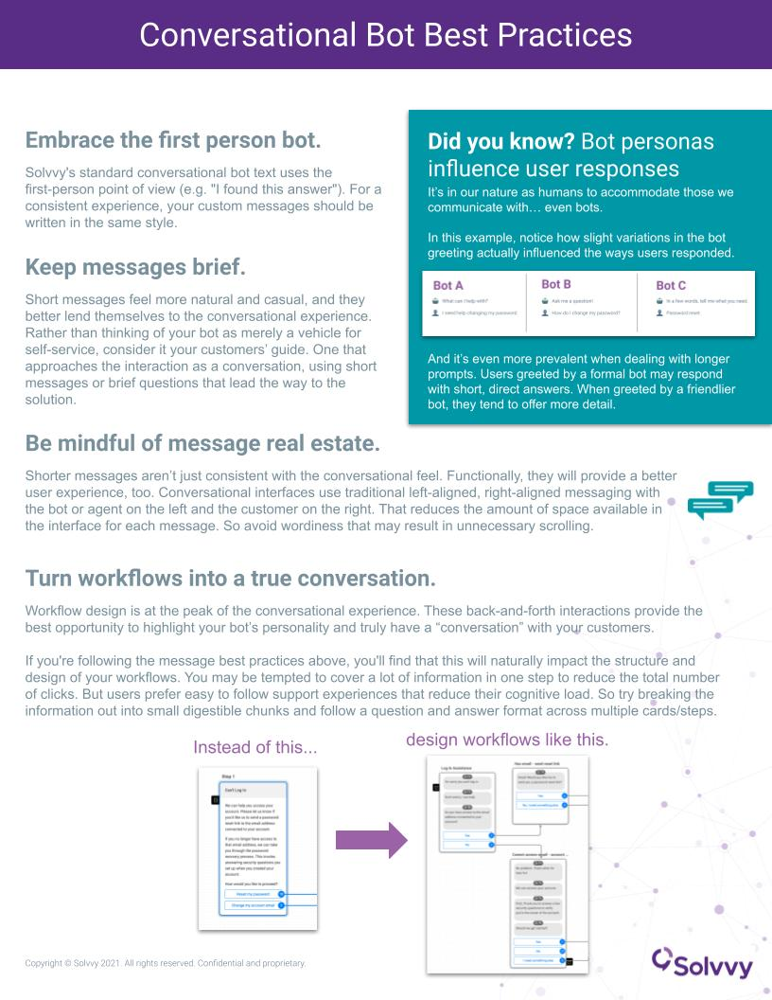

One-pager · Solvvy
Training that includes how to do something but omits how to do it well is a real miss. This one-pager is an example of a best-practices output rooted in real subject matter expertise, built while ramping teams on Solvvy's conversational bot.
